산업안전산업기사 (2020-08-22 기출문제)
1과목: 산업안전관리론
1. 무재해 운동의 이념 가운데 직장의 위험 요인을 행동하기 전에 예지하여 발견, 파악, 해결하는 것을 의미하는 것은?
- 무의 원칙
- 선취의 원칙
- 참가의 원칙
- 인간 존중의 원칙
(정답률: 78%)

2. 산업안전보건법령상 안전보건표시의 종류 중 인화성물질에 관한 표지에 해당하는 것은?
- 금지표시
- 경고표시
- 지시표시
- 안내표시
(정답률: 85%)
3. 인간관계의 메커니즘 중 다른 사람의 행동 양식이나 태도를 투입시키거나, 다른 사람 가운데서 자기와 비슷한 것을 발견하는 것을 무엇이라고 하는가?
- 투사(Projection)
- 모방(Imitation)
- 암시(Suggestion)
- 동일화(Identification)
(정답률: 71%)
4. 산업안전보건법령상 근로자 안전보건교육 대상과 교육시간으로 옳은 것은?
- 정기교육인 경우 : 사무직 종사근로자 – 매분기 3시간 이상
- 정기교육인 경우 : 관리감독자 지위에 있는 사람 – 연간 10시간 이상
- 채용 시 교육인 경우 : 일용근로자 – 4시간 이상
- 작업내용 변경 시 교육인 경우 : 일용근로자를 제외한 근로자 – 1시간 이상
(정답률: 65%)
5. 위험예지훈련 4라운드 기법의 진행방법에 있어 문제점 발견 및 중요 문제를 결정하는 단계는?
- 대책수립 단계
- 현상파악 단계
- 본질추구 단계
- 행동목표설정 단계
(정답률: 46%)
6. 산업안전보건법령상 안전모의 시험성능기준 항목이 아닌 것은?
- 난연성
- 인장성
- 내관통성
- 충격흡수성
(정답률: 75%)
7. O.J.T(On the Job Traning)의 특징 중 틀린 것은?
- 훈련과 업무의 계속성이 끊어지지 않는다.
- 직장의 실정에 맞게 실제적 훈련이 가능하다.
- 훈련의 효과가 곧 업무에 나타나며, 훈련의 개선이 용이하다.
- 다수의 근로자들에게 조직적 훈련이 가능하다.
(정답률: 76%)
8. 인지과정 착오의 요인이 아닌 것은?
- 정서 불안정
- 감각차단 현상
- 작업자의 기능미숙
- 생리·심리적 능력의 한계
(정답률: 69%)
9. 학습 성취에 직접적인 영향을 미치는 요인과 가장 거리가 먼 것은?
- 적성
- 준비도
- 개인차
- 동기유발
(정답률: 56%)
10. 태풍, 지진 등의 천재지변이 발생한 경우나 이상상태 발생 시 기능상 이상 유·무에 대한 안전점검의 종류는?
- 일상점검
- 정기점검
- 수시점검
- 특별점검
(정답률: 84%)
11. 연간 근로자수가 300명인 A 공장에서 지난 1년간 1명의 재해자(신체장해등급:Ⅰ급)가 발생하였다면 이 공장의 강도율은? (단, 근로자 1인당 1일 8시간씩 연간 300일을 근무하였다.)
- 4.27
- 6.42
- 10.⑤
- 10.42
(정답률: 49%)
12. 재해예방의 4원칙에 해당하는 내용이 아닌 것은?
- 예방가능의 원칙
- 원인계기의 원칙
- 손실우연의 원칙
- 사고조사의 원칙
(정답률: 71%)
13. 알더퍼의 ERG(Existence Relation Growth)이론에서 생리적 욕구, 물리적 측면의 안전욕구 등 저차원적 욕구에 해당하는 것은?
- 관계욕구
- 성장욕구
- 존재욕구
- 사회적욕구
(정답률: 60%)
14. 상황성 누발자의 재해유발원인과 거리가 먼 것은?
- 작업의 어려움
- 기계설비의 결함
- 심신의 근심
- 주의력의 산만
(정답률: 50%)
15. 리더십(leadership)의 특성에 대한 설명으로 옳은 것은?
- 지휘형태는 민주적이다.
- 권한부여는 위에서 위임된다.
- 구성원과의 관계는 지배적 구조이다.
- 권한근거는 법적 또는 공식적으로 부여된다.
(정답률: 70%)
16. 재해 원인을 통상적으로 직접원인과 간접원인으로 나눌 때 직접원인에 해당되는 것은?
- 기술적원인
- 물적원인
- 교육적원인
- 관리적원인
(정답률: 75%)
17. 안전교육 계획 수립 시 고려하여야 할 사항과 관계가 가장 먼 것은?
- 필요한 정보를 수집한다.
- 현장의 의견을 충분히 반영한다.
- 법 규정에 의한 교육에 한정한다.
- 안전교육 시행 체계와의 관련을 고려한다.
(정답률: 78%)
18. 안전관리조직의 형태 중 라인스탭형에 대한 설명으로 틀린 것은?
- 대규모 사업장(1000명 이상)에 효율적이다.
- 안전과 생산업무가 분리될 우려가 없기 때문에 균형을 유지할 수 있다.
- 모든 안전관리 업무를 생산라인을 통하여 직선적으로 이루어지도록 편성된 조직이다.
- 안전업무를 전문적으로 담당하는 스탭 및 생산라인의 각 계층에도 겸임 또는 전임의 안전담당자를 둔다.
(정답률: 68%)
19. 기능(기술)교육의 진행방법 중 하버드 학파의 5단계 교수법의 순서로 옳은 것은?
- 준비 → 연합 → 교시 → 응용 → 총괄
- 준비 → 교시 → 연합 → 총괄 → 응용
- 준비 → 총괄 → 연합 → 응용 → 교시
- 준비 → 응용 → 총괄 → 교시 → 연합
(정답률: 75%)
20. 재해의 원인과 결과를 연계하여 상호 관계를 파악하기 위해 도표화하는 분석방법은?
- 관리도
- 파레토도
- 특성요인도
- 크로스분류도
(정답률: 61%)
2과목: 인간공학 및 시스템안전공학
21. 산업안전보건법령상 정밀작업 시 갖추어져야할 작업면의 조도 기준은? (단, 갱내 작업장과 감광재료를 취급하는 작업장은 제외한다.)
- 75럭스 이상
- 150럭스 이상
- 300럭스 이상
- 750럭스 이상
(정답률: 60%)
22. 시스템 수명주기 단계 중 이전 단계들에서 발생되었던 사고 또는 사건으로부터 축적된 자료에 대해 실증을 통한 문제를 규명하고 이를 최소화하기 위한 조치를 마련하는 단계는?
- 구상단계
- 정의단계
- 생산단계
- 운전단계
(정답률: 42%)
23. FTA에 의한 재해사례 연구의 순서를 올바르게 나열한 것은?
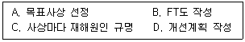
- A → B → C → D
- A → C → B → D
- B → C → A → D
- B → A → C → D
(정답률: 68%)
24. 반복되는 사건이 많이 있는 경우에 FTA의 최소 컷셋을 구하는 알고리즘이 아닌 것은?
- Fussel Algorithm
- Boolean Algorithm
- Monte Carlo Algorithm
- Limnios & Ziani Algorithm
(정답률: 70%)
25. 신뢰도가 0.4인 부품 5개가 병렬결합 모델로 구성된 제품이 있을 때 이 제품의 신뢰도는?
- 0.90
- 0.91
- 0.92
- 0.93
(정답률: 57%)
26. 조작자 한 사람의 신뢰도가 0.9일 때 요원을 중복하여 2인 1조가 되어 작업을 진행하는 공정이 있다. 작업 기간 중 항상 요원 지원을 한다면 이 조의 인간 신뢰도는?
- 0.93
- 0.94
- 0.96
- 0.99
(정답률: 59%)
27. 주물공장 A작업자의 작업지속시간과 휴식시간을 열압박지수(HSI)를 활용하여 계산하니 각각 45분, 15분이었다. A작업자의 1일 작업량(TW)은 얼마인가? (단, 휴식시간은 포함하지 않으며, 1일 근무시간은 8시간이다.)
- 4.5시간
- 5시간
- 5.5시간
- 6시간
(정답률: 61%)
28. 다수의 표시장치(디스플레이)를 수평으로 배열할 경우 해당 제어장치를 각각의 표시장치 아래에 배치하면 좋아지는 양립성의 종류는?
- 공간 양립성
- 운동 양립성
- 개념 양립성
- 양식 양립성
(정답률: 66%)
29. 환경요소의 조합에 의해서 부과되는 스트레스나 노출로 인해서 개인에 유발되는 긴장(strain)을 나타내는 환경요소 복합지수가 아닌 것은?
- 카타온도(kata temperature)
- Oxford 지수(wet-dry index)
- 실효온도(effective temperature)
- 열 스트레스 지수(heat stress index)
(정답률: 54%)
30. 활동이 내용마다 “우·양·가·불가”로 평가하고 이 평가내용을 합하여 다시 종합적으로 정규화하여 평가하는 안전성 평가기법은?
- 평점척도법
- 쌍대비교법
- 계층적 기법
- 일관성 검정법
(정답률: 67%)
31. MIL-STD-882E에서 분류한 심각도(severity) 카테고리 범주에 해당하지 않는 것은?
- 재앙수준(catastrophic)
- 임계수준(critical)
- 경계수준(precautionaryy)
- 무시가능수준(negligible)
(정답률: 44%)
32. 다음 중 육체적 활동에 대한 생리학적 측정방법과 가장 거리가 먼 것은?
- EMG
- EEG
- 심박수
- 에너지소비량
(정답률: 60%)
33. 작업기억(working memory)과 관련된 설명으로 옳지 않은 것은?
- 오랜 기간 정보를 기억하는 것이다.
- 작업기억 내의 정보는 시간이 흐름에 따라 쇠퇴할 수 있다.
- 작업기억의 정보는 일반적으로 시각, 음성, 의미 코드의 3가지로 코드화된다.
- 리허설(rehearsal)은 정보를 작업기억 내에 유지하는 유일한 방법이다.
(정답률: 66%)
34. 다음 형상 암호화 조종장치 중 이산 멈춤 위치용 조종장치는?
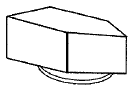
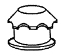
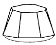
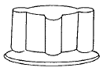
(정답률: 62%)
35. 표시 값의 변화 방향이나 변화 속도를 나타내어 전반적인 추이의 변화를 관측할 필요가 있는 경우에 가장 적합한 표시장치 유형은?
- 계수형(digital)
- 묘사형(descriptive)
- 동목형(moving scale)
- 동침형(moving pointer)
(정답률: 59%)
36. 사용자의 잘못된 조작 또는 실수로 인해 기계의 고장이 발생하지 않도록 설계하는 방법은?
- EMEA
- HAZOP
- fail safe
- fool proof
(정답률: 60%)
37. 인간-기계 시스템을 설계하기 위해 고려해야 할 사항과 거리가 먼 것은?
- 시스템 설계 시 동작 경제의 원칙이 만족되도록 고려한다.
- 인간과 기계가 모두 복수인 경우, 종합적인 효과 보다 기계를 우선적으로 고려한다.
- 대상이 되는 시스템이 위치할 환경 조건이 인간에 대한 한계치를 만족하는가의 여부를 조사한다.
- 인간이 수행해야 할 조작이 연속적인가 불연속적 인가를 알아보기 위해 특성조사를 실시한다.
(정답률: 74%)
38. 한국산업표준상 결함 나무 분석(FTA) 시 다음과 같이 사용되는 사상기호가 나타내는 사상은?
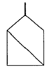
- 통상사상
- 기본사상
- 공사상
- 심층분석사상
(정답률: 51%)
39. 작업자의 작업공간과 관련된 내용으로 옳지 않은 것은?
- 서서 작업하는 작업공간에서 발바닥을 높이면 뻗침길이가 늘어난다.
- 서서 작업하는 작업공간에서 신체의 균형에 제한을 받으면 뻗침길이가 늘어난다.
- 앉아서 작업하는 작업공간은 동적 팔뻗침에 의해 포락면(reach envelope)의 한계가 결정된다.
- 앉아서 작업하는 작업공간에서 기능적 팔뻗침에 영향을 주는 제약이 적을수록 뻗침 길이가 늘어난다.
(정답률: 61%)
40. 조종장치의 촉각적 암호화를 위하여 고려하는 특성으로 볼 수 없는 것은?
- 형상
- 무게
- 크기
- 표면 촉감
(정답률: 64%)
3과목: 기계위험방지기술
41. 크레인 작업 시 로프에 1톤의 중량을 걸어 20m/s2의 가속도로 감아올릴 때, 로프에 걸리는 총하중(kgf)은 약 얼마인가? (단, 중력가속도는 10m/s2 이다.)
- 1000
- 2000
- 3000
- 3500
(정답률: 46%)
42. 다음 중 선반 작업 시 준수하여야 하는 안전사항으로 틀린 것은?
- 작업 중 면장갑 착용을 금한다.
- 작업 시 공구는 항상 정리해 둔다.
- 운전 중에 백기어를 사용한다.
- 주유 및 청소를 할 때에는 반드시 기계를 정지시키고 한다.
(정답률: 74%)
43. 기계설비의 안전조건 중 구조의 안전화에 대한 설명으로 가장 거리가 먼 것은?
- 기계재료의 선정 시 재료 자체에 결함이 없는지 철저히 확인한다.
- 사용 중 재료의 강도가 열화 될 것을 감안하여 설계 시 안전율을 고려한다.
- 기계작동 시 기계의 오동작을 방지하기 위하여 오동작 방지 회로를 적용한다.
- 가공 경화와 같은 가공결함이 생길 우려가 있는 경우는 열처리 등으로 결함을 방지한다.
(정답률: 50%)
44. 산업안전보건법령상 리프트의 종류로 틀린 것은?
- 건설작업용 리프트
- 자동차정비용 리프트
- 이삿짐운반용 리프트
- 간이 리프트
(정답률: 64%)
45. 보일러수 속에 불순물 농도가 높아지면서 수면에 거품이 형성되어 수위가 불안정하게 되는 현상은?
- 포밍
- 서징
- 수격현상
- 공동현상
(정답률: 72%)
46. 산업안전보건법령상 연삭숫돌의 상부를 사용하는 것을 목적으로 하는 탁상용 연삭기 덮개의 노출각도는?
- 60° 이내
- 65° 이내
- 80° 이내
- 125° 이내
(정답률: 54%)
47. 산업안전보건법령상 위험기계·기구별 방호조치로 가장 적절하지 않은 것은?
- 산업용 로봇 - 안전매트
- 보일러 - 급정지장치
- 목재가공용 둥근톱기계 - 반발예방장치
- 산업용 로봇 – 광전자식 방호장치
(정답률: 64%)
48. 산업안전보건법령상 연삭숫돌의 시운전에 관한 설명으로 옳은 것은?
- 연삭숫돌의 교체 시에는 바로 사용할 수 있다.
- 연삭숫돌의 교체 시 1분 이상 시운전을 하여야 한다.
- 연삭숫돌의 교체 시 2분 이상 시운전을 하여야 한다.
- 연삭숫돌의 교체 시 3분 이상 시운전을 하여야 한다.
(정답률: 69%)
49. 금형의 안전화에 대한 설명 중 틀린 것은?
- 금형의 틈새는 8mm 이상 충분하게 확보한다.
- 금형 사이에 신체일부가 들어가지 않도록 한다.
- 충격이 반복되어 부가되는 부분에는 완충장치를 설치한다.
- 금형설치용 홈은 설치된 프레스의 홈에 적합한 현상의 것으로 한다.
(정답률: 69%)
50. 컨베이어의 종류가 아닌 것은?
- 체인 컨베이어
- 스크류 컨베이어
- 슬라이딩 컨베이어
- 유체 컨베이어
(정답률: 53%)
51. 산업안전보건법령상 지게차 방호장치에 해당하는 것은?
- 포크
- 헤드가드
- 호이스트
- 힌지드 버킷
(정답률: 69%)
52. 프레스의 방호장치에 해당되지 않는 것은?
- 가드식 방호장치
- 수인식 방호장치
- 롤 피드식 방호장치
- 손쳐내기식 방호장치
(정답률: 61%)
53. 산업안전보건법령상 양중기에서 절단하중이 100톤인 와이어로프를 사용하여 화물을 직접적으로 지지하는 경우, 화물의 최대허용하중(톤)은?
- 20
- 30
- 40
- 50
(정답률: 50%)
54. 산업안전보건법령상 기계 기구의 방호조치에 대한 사업주·근로자 준수사항으로 가장 적절하지 않은 것은?
- 방호 조치의 기능상실에 대한 신고가 있을 시 사업주는 수리, 보수 및 작업중지 등 적절한 조치를 할 것
- 방호조치 해체 사유가 소멸된 경우 근로자는 즉시 원상회복 시킬 것
- 방호조치의 기능상실을 발견 시 사업주에게 신고할 것
- 방호조치 해체 시 해당 근로자가 판단하여 해체 할 것
(정답률: 72%)
55. 산업안전보건법령상 프레스를 사용하여 작업을 할 때 작업시작 전 점검 항목에 해당하지 않는 것은?
- 전선 및 접속부 상태
- 클러치 및 브레이크의 기능
- 프레스의 금형 및 고정볼트 상태
- 1행정 1정지기구·급정지장치 및 비상정지장치의 기능
(정답률: 61%)
56. 프레스의 분류 중 동력 프레스에 해당하지 않는 것은?
- 크랭크 프레스
- 토글 프레스
- 마찰 프레스
- 아버 프레스
(정답률: 60%)
57. 밀링작업 시 안전수칙에 해당되지 않는 것은?
- 칩이나 부스러기는 반드시 브러시를 사용하여 제거한다.
- 가공 중에는 가공면을 손으로 점검하지 않는다.
- 기계를 가동 중에는 변속시키지 않는다.
- 바이트는 가급적 길게 고정시킨다.
(정답률: 72%)
58. 산소-아세틸렌가스 용접에서 산소 용기의 취급 시 주의사항으로 틀린 것은?
- 산소 용기의 운반 시 밸브를 닫고 캡을 씌워서 이동할 것
- 기름이 묻은 손이나 장갑을 끼고 취급하지 말 것
- 원활한 산소 공급을 위하여 산소 용기는 눕혀서 사용할 것
- 통풍이 잘되고 직사광선이 없는 곳에 보관할 것
(정답률: 74%)
59. 가드(guard)의 종류가 아닌 것은?
- 고정식
- 조정식
- 자동식
- 반자동식
(정답률: 58%)
60. 산업안전보건법령상 롤러기의 무릎조작식 급정지장치의 설치 위치 기준은? (단, 위치는 급정지장치 조작부의 중심점을 기준)
- 밑면에서 0.7~0.8m 이내
- 밑면에서 0.6m 이내
- 밑면에서 0.8~1.2m 이내
- 밑면에서 1.5m 이내
(정답률: 55%)
4과목: 전기 및 화학설비위험방지기술
61. 대전된 물체가 방전을 일으킬 때에 에너지 E(J)를 구하는 식으로 옳은 것은? (단, 도체의 정전용량을 C(F), 대전전위를 V(V), 대전전하량을 Q(C)라 한다.)
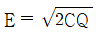
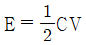
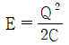
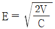
(정답률: 57%)
62. 인체의 대부분이 수중에 있는 상태에서의 허용접촉전압으로 옳은 것은?
- 2.5V 이하
- 25V 이하
- 50V 이하
- 100V 이하
(정답률: 62%)
63. 전기설비에서 제1종 접지공사는 접지저항을 몇 Ω 이하로 해야 하는가?(관련 규정 개정전 문제로 여기서는 기존 정답인 2번을 누르면 정답 처리됩니다. 자세한 내용은 해설을 참고하세요.)
- 5
- 10
- 50
- 100
(정답률: 66%)
64. 저압전선로 중 절연 부분의 전선과 대지 간 및 전선의 심선 상호간의 절연저항은 사용전압에 대한 누설전류가 최대 공급전류의 얼마를 넘지 않도록 규정하고 있는가?
- 1/1000
- 1/1500
- 1/2000
- 1/2500
(정답률: 53%)
65. 방폭구조 전기기계·기구의 선정기준에 있어 가스폭발 위험장소의 제1종 장소에 사용할 수 없는 방폭구조는?
- 내압방폭구조
- 안전증방폭구조
- 본질안전방폭구조
- 비점화방폭구조
(정답률: 49%)
66. 폭발성 가스나 전기기기 내부로 침입하지 못하도록 전기기기의 내부에 불활성가스를 압입하는 방식의 방폭구조는?
- 내압방폭구조
- 압력방폭구조
- 본질안전방폭구조
- 유입방폭구조
(정답률: 42%)
67. 옥내배선에서 누전으로 인한 화재방지의 대책에 아닌 것은?
- 배선불량 시 재시공할 것
- 배선에 단로기를 설치할 것
- 정기적으로 절연저항을 측정할 것
- 정기적으로 배선시공 상태를 확인할 것
(정답률: 57%)
68. 제전기의 설치 장소로 가장 적절한 것은?
- 대전물체의 뒷면에 접지물체가 있는 경우
- 정전기의 발생원으로부터 5~20cm 정도 떨어진 장소
- 오물과 이물질이 자주 발생하고 묻기 쉬운 장소
- 온도가 150℃, 상대습도가 80% 이상인 장소
(정답률: 57%)
69. 전기적 불꽃 또는 아크에 의한 화상의 우려가 높은 고압 이상의 충전전로작업에 근로자를 종사시키는 경우에는 어떠한 성능을 가진 작업복을 착용시켜야 하는가?
- 방충처리 또는 방수성능을 갖춘 작업복
- 방염처리 또는 난연성능을 갖춘 작업복
- 방청처리 또는 난연성능을 갖춘 작업복
- 방수처리 또는 방청성능을 갖춘 작업복
(정답률: 68%)
70. 감전을 방지하기 위해 관계근로자에게 반드시 주지시켜야하는 정전작업 사항으로 가장 거리가 먼 것은?
- 전원설비 효율에 관한 사항
- 단락접지 실시에 관한 사항
- 전원 재투입 순서에 관한 사항
- 작업 책임자의 임명, 정전범위 및 절연용 보호구 작업 등 필요한 사항
(정답률: 58%)
71. 위험물안전관리법령상 제3류 위험물의 금수성 물질이 아닌 것은?
- 과염소산염
- 금속나트륨
- 탄화칼슘
- 탄화알루미늄
(정답률: 52%)
72. 이산화탄소 소화기에 관한 설명으로 옳지 않은 것은?
- 전기화재에 사용할 수 있다.
- 주된 소화 작용은 질식작용이다.
- 소화약제 자체 압력으로 방출이 가능하다.
- 전기전도성이 높아 사용 시 감전에 유의해야 한다.
(정답률: 65%)
73. 낮은 압력에서 물질의 끓는점이 내려가는 현상을 이용하여 시행하는 분리법으로 온도를 높여서 가열할 경우 원료가 분해될 우려가 있는 물질을 증류할 때 사용하는 방법을 무엇이라 하는가?
- 진공증류
- 추출증류
- 공비증류
- 수증기증류
(정답률: 47%)
74. 다음 중 폭발하한농도(vol%)가 가장 높은 것은?
- 일산화탄소
- 아세틸렌
- 디에틸에테르
- 아세톤
(정답률: 36%)
75. 다음 중 불연성 가스에 해당하는 것은?
- 프로판
- 탄산가스
- 아세틸렌
- 암모니아
(정답률: 48%)
76. 염소산칼륨에 관한 설명으로 옳은 것은?
- 탄소, 유기물과 접촉 시에도 분해폭발 위험은 거의 없다.
- 열에 강한 성질이 있어서 500℃의 고온에서도 안정적이다.
- 찬물이나 에탄올에도 매우 잘 녹는다.
- 산화성 고체물질이다.
(정답률: 51%)
77. 메탄 20vol%, 에탄 25vol%, 프로판 55vol%의 조성을 가진 혼합가스의 폭발하한계값(vol%)은 약 얼마인가? (단, 메탄, 에탄 및 프로판가스의 폭발하한값은 각각 5vol%, 3vol%, 2vol% 이다.)
- 2.51
- 3.12
- 4.26
- 5.22
(정답률: 40%)
78. 다음 중 증류탑의 원리로 거리가 먼 것은?
- 끓는점(휘발성) 차이를 이용하여 목적 성분을 분리한다.
- 열이동은 도모하지만 물질이동은 관계하지 않는다.
- 기-액 두 상의 접촉이 충분히 일어날 수 있는 접촉 면적이 필요하다.
- 여러 개의 단을 사용하는 다단탑이 사용될 수 있다.
(정답률: 59%)
79. 물과 접촉할 경우 화재나 폭발의 위험성이 더욱 증가하는 것은?
- 칼륨
- 트리니트로톨루엔
- 황린
- 니트로셀룰로오스
(정답률: 59%)
80. 다음 중 화재의 종류가 옳게 연결된 것은?
- A급화재 - 유류화재
- B급화재 - 유류화재
- C급화재 - 일반화재
- D급화재 – 일반화재
(정답률: 67%)
5과목: 건설안전기술
81. 항타기 및 항발기를 조립하는 경우 점검하여야 할 사항이 아닌 것은?
- 과부하장치 및 제동장치의 이상 유무
- 권상장치의 브레이크 및 쐐기장치 기능의 이상 유무
- 본체 연결부의 풀림 또는 손상의 유무
- 권상기의 설치상태의 이상 유무
(정답률: 41%)
82. 건설공사 유해위험방지계획서 제출 시 공통적으로 제출하여야 할 첨부서류가 아닌 것은?
- 공사개요서
- 전체 공정표
- 산업안전보건관리비 사용계획서
- 가설도로계획서
(정답률: 53%)
83. 신축공사 현장에서 강관으로 외부비계를 설치할 때 비계기둥의 최고 높이가 45m 라면 관련 법령에 따라 비계기둥을 2개의 강관으로 보강하여야 하는 높이는 지상으로부터 얼마까지인가?
- 14m
- 20m
- 25m
- 31m
(정답률: 42%)
84. 철근콘크리트 현장타설공법과 비교한 PC(precast concrete)공법의 장점으로 볼 수 없는 것은?
- 기후의 영향을 받지 않아 동절기 시공이 가능하고, 공기를 단축할 수 있다.
- 현장작업이 감소되고, 생산성이 향상되어 인력절감이 가능하다.
- 공사비가 매우 저렴하다.
- 공장 제작이므로 콘크리트 양생 시 최적조건에 의한 양질의 제품생산이 가능하다.
(정답률: 63%)
85. 흙막이 지보공을 설치하였을 때 붕괴 등의 위험방지를 위하여 정기적으로 점검하고, 이상 발견 시 즉시 보수하여야 하는 사항이 아닌 것은?
- 침하의 정도
- 버팀대의 긴압의 정도
- 지형·지질 및 지층상태
- 부재의 손상·변형·변위 및 탈락의 유무와 상태
(정답률: 51%)
86. 작업발판 및 통로의 끝이나 개구부로서 근로자가 추락할 위험이 있는 장소에서의 방호조치로 옳지 않은 것은?
- 안전난간 설치
- 와이어로프 설치
- 울타리 설치
- 수직형 추락방망 설치
(정답률: 50%)
87. 히빙(heaving)현상이 가장 쉽게 발생하는 토질지반은?
- 연약한 점토 지반
- 연약한 사질토 지반
- 견고한 점토 지반
- 견고한 사질토 지반
(정답률: 54%)
88. 암질 변화구간 및 이상 암질 출현 시 판별 방법과 가장 거리가 먼 것은?
- R.Q.D
- R.M.R
- 지표침하량
- 탄성파 속도
(정답률: 44%)
89. 블레이드의 길이가 길고 낮으며 블레이드의 좌우를 전후 25~30° 각도로 회전시킬 수 있어 흙을 측면으로 보낼 수 있는 도저는?
- 레이크 도저
- 스트레이트 도저
- 앵글도저
- 틸트도저
(정답률: 61%)
90. 동바리로 사용하는 파이프 서포트에 관한 설치 기준으로 옳지 않은 것은?
- 파이프 서포트를 3개 이상 이어서 사용하지 않도록 할 것
- 파이프 서포트를 이어서 사용하는 경우에는 4개 이상의 볼트 또는 전용철물을 사용하여 이을 것
- 높이가 3.5m를 초과하는 경우에는 높이 2m 이내마다 수평연결재를 2개 방향으로 만들고 수평연결재의 변위를 방지할 것
- 파이프 서포트 사이에 교차가새를 설치하여 수평력에 대하여 보강 조치할 것
(정답률: 32%)
91. 건물외부에 낙하물 방지망을 설치할 경우 벽면으로부터 돌출되는 거리의 기준은?
- 1m 이상
- 1.5m 이상
- 1.8m 이상
- 2m 이상
(정답률: 48%)
92. 콘크리트를 타설할 때 거푸집에 작용하는 콘크리트 측압에 영향을 미치는 요인과 가장 거리가 먼 것은?
- 콘크리트 타설 속도
- 콘크리트 타설 높이
- 콘크리트의 강도
- 기온
(정답률: 47%)
93. 다음과 같은 조건에서 추락 시 로프의 지지점에서 최하단까지의 거리 h를 구하면 얼마인가?
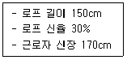
- 2.8m
- 3.0m
- 3.2m
- 3.4m
(정답률: 39%)
94. 산업안전보건법령에 따른 크레인을 사용하여 작업을 하는 때 작업시작 전 점검사항에 해당되지 않는 것은?
- 권과방지장치·브레이크·클러치 및 운전장치의 기능
- 주행로의 상측 및 트롤리(trolleyy)가 횡행하는 레일의 상태
- 원동기 및 풀리(pulley)기능의 이상 유무
- 와이어로프가 통하고 있는 곳의 상태
(정답률: 42%)
95. 다음은 비계를 조립하여 사용하는 경우 작업발판설치에 관한 기준이다. ( )에 들어갈 내용으로 옳은 것은?
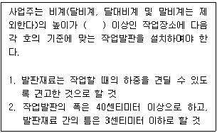
- 1m
- 2m
- 3m
- 4m
(정답률: 59%)
96. 다음은 산업안전보건법령에 따른 승강설비의 설치에 관한 내용이다. ( ) 에 들어갈 내용으로 옳은 것은?
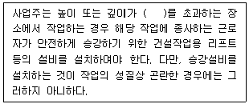
- 2m
- 3m
- 4m
- 5m
(정답률: 54%)
97. 리프트(Lift)의 방호장치에 해당하지 않는 것은?
- 권과방지장치
- 비상정지장치
- 과부하방지장치
- 자동경보장치
(정답률: 51%)
98. 부두·안벽 등 하역작업을 하는 장소에서 부두 또는 안벽의 선을 따라 통로를 설치하는 경우 그 폭을 최소 얼마 이상으로 하여야 하는가?
- 60 cm
- 90 cm
- 120 cm
- 150 cm
(정답률: 57%)
99. 안전관리비의 사용 항목에 해당하지 않는 것은?
- 안전시설비
- 개인보호구 구입비
- 접대비
- 사업장의 안전·보건진단비
(정답률: 70%)
100. 강관을 사용하여 비계를 구성하는 경우의 준수사항으로 옳지 않은 것은?
- 비계기둥의 간격은 띠장 방향에서는 1.85m 이하로 할 것
- 비계기둥의 간격은 장선(長線) 방향에서는 1.0m 이하로 할 것
- 띠장 간격은 2.0m 이하로 할 것
- 비계기둥 간의 적재하중은 400kg을 초과하지 않도록 할 것
(정답률: 43%)